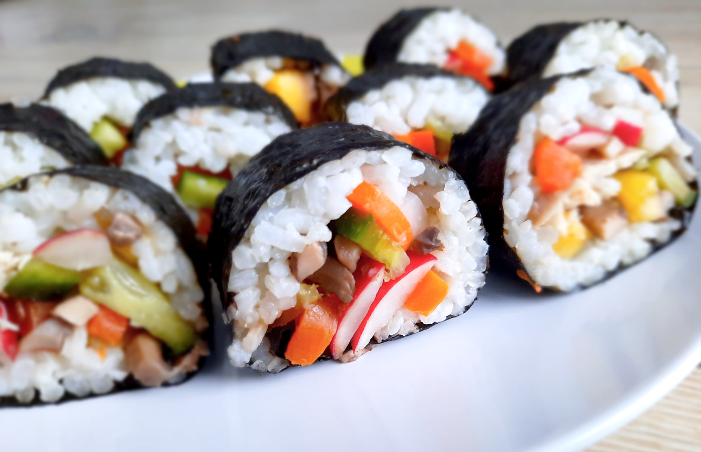

koreaanse bibimbap

falafelwrap
griekse vega gyros wraps

groene smoothie

thaise mango sticky rice

tropische pepernoten

italiaanse caponata

hutspot uit eigen land

kokossoep

japanse beef teriyaki

coq au vin

enchiladas

hawaiiaanse poké bowl

avocado salade

chili sin carne met guacamole

mexicaanse huevos rancheros

zalm met pastasalade

maki sushi
Deze sushirol is ook lekker in de visvariant met tonijn of zalm. Vervang een groente eens door avocado!

Bereidingsduur: 70 minuten
Aantal personen: 2
Ingrediënten:
5 nori vellen
250 gram sushirijst
5 eetlepels rijstwijnazijn
naar wens sojasaus
naar wens wasabi
100 gram komkommer
70 gram mango
80 gram wortel
100 gram shii take paddestoelen
100 gram radijsjes
optioneel avocado
optioneel tonijn
optioneel zalm
1 bamboe rolmatje
5 nori vellen
250 gram sushirijst
5 eetlepels rijstwijnazijn
naar wens sojasaus
naar wens wasabi
100 gram komkommer
70 gram mango
80 gram wortel
100 gram shii take paddestoelen
100 gram radijsjes
optioneel avocado
optioneel tonijn
optioneel zalm
1 bamboe rolmatje
Instructies:
1. Kook de sushirijst volgens de verpakking. Als de rijst is afgekoeld sprenkel je de rijstwijnazijn erover.
2. Kook de wortel en snijd alle groenten heel klein. Bak heel kort de shii take.
3. Pak een bamboe rolmatje en leg hierop een nori vel. Verdeel hierover de sushi rijst maar zorg dat er aan de boven en onderkant ongeveer 1 cm leeg blijft want hier moet het vel aan elkaar kleven.
4. Leg de gewenste groente of groenten in een strookje in het midden van de rijst.
5. Rol de sushi met het matje van je weg. Druk voorzichtig zodat de sushi in vorm komt. Besprenkel het uiteinde van het nori vel met water zodat dit aan het andere uiteinde blijft kleven.
6. Snijd de rol met een scherp nat mes in stukjes. Serveer met sojasaus en wasabi.
1. Kook de sushirijst volgens de verpakking. Als de rijst is afgekoeld sprenkel je de rijstwijnazijn erover.
2. Kook de wortel en snijd alle groenten heel klein. Bak heel kort de shii take.
3. Pak een bamboe rolmatje en leg hierop een nori vel. Verdeel hierover de sushi rijst maar zorg dat er aan de boven en onderkant ongeveer 1 cm leeg blijft want hier moet het vel aan elkaar kleven.
4. Leg de gewenste groente of groenten in een strookje in het midden van de rijst.
5. Rol de sushi met het matje van je weg. Druk voorzichtig zodat de sushi in vorm komt. Besprenkel het uiteinde van het nori vel met water zodat dit aan het andere uiteinde blijft kleven.
6. Snijd de rol met een scherp nat mes in stukjes. Serveer met sojasaus en wasabi.